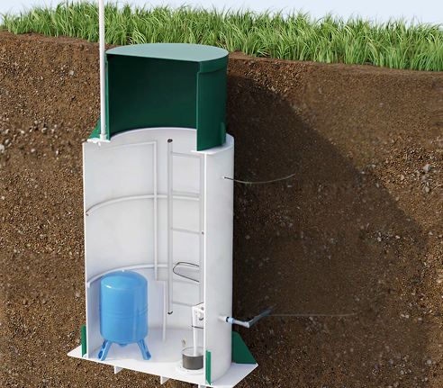

<section class="section about-section mb-100">
	<div class="block-container">
		<div class="about-block">
			<div class="about-block__image w-43 tablet-hidden">
				
			</div>
			<div class="about-block__content">
				<div class="block-heading">
					<h2 class="block-heading__title">Миссия и ценности</h2>
				</div>
				<div class="about-block__text">
					<p>
						Наша миссия — обеспечивать устойчивое развитие городов через создание надежной и экологичной инженерной
						инфраструктуры. Мы верим, что качество жизни напрямую зависит от качества инженерных систем, и делаем всё,
						чтобы вода в городе была чистой, а канализация — безопасной.
					</p>
				</div>
				<h3 class="about-block__subheading">Наши ценности:</h3>
				<ul class="checkmark-list">
					<li class="checkmark-list__item">Ответственность перед обществом и природой</li>
					<li class="checkmark-list__item">Инженерная надёжность</li>
					<li class="checkmark-list__item">Инновации и развитие</li>
					<li class="checkmark-list__item">Профессионализм и командная работа</li>
				</ul>
			</div>
		</div>
	</div>
</section>